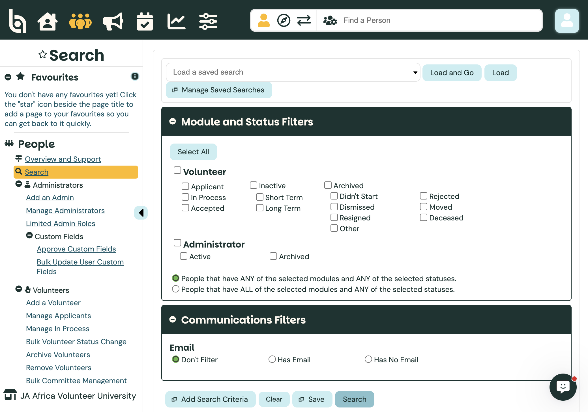
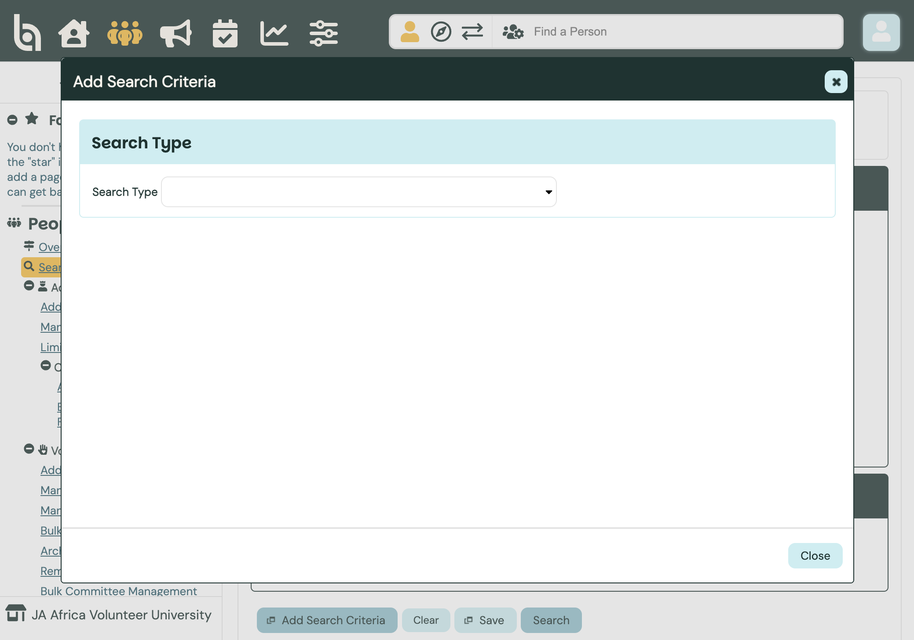
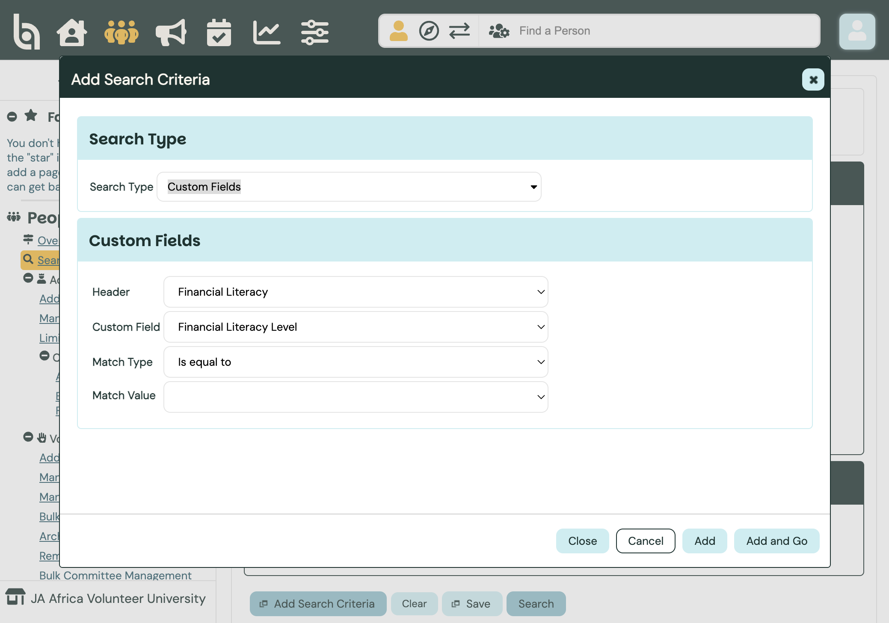
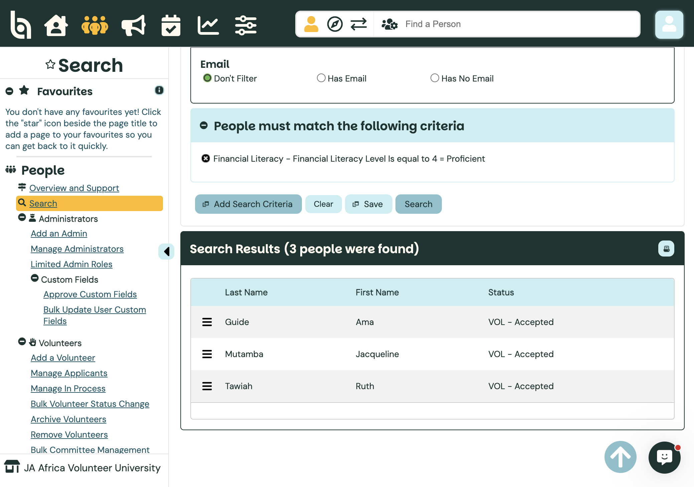
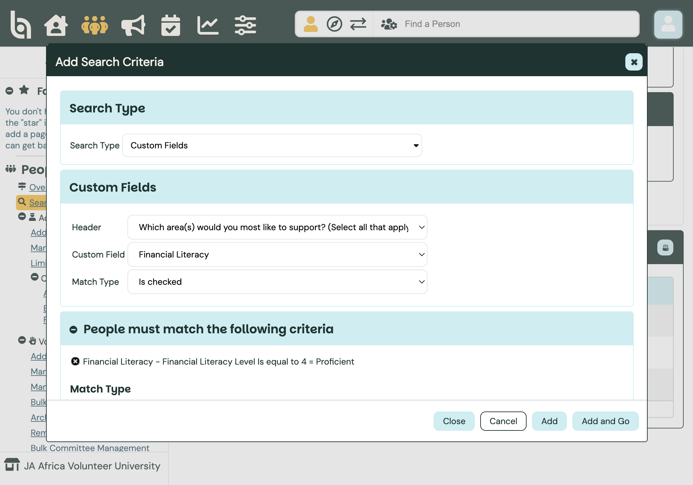
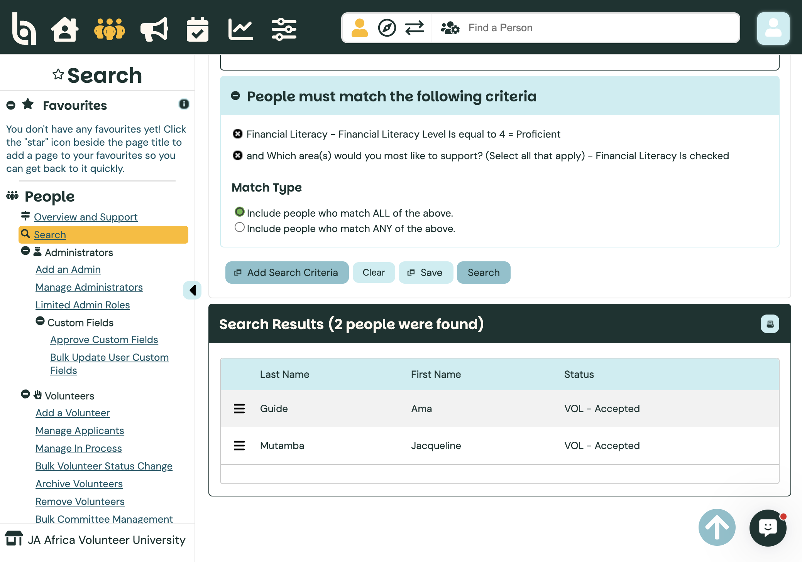
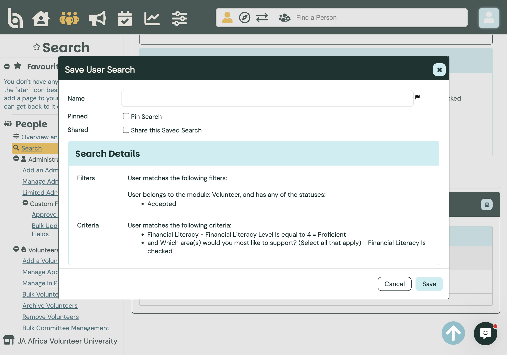

Admin guide
Audience · AdministratorSearches — Skills Survey (Custom Fields)
Find volunteers by Skills Survey answers using People → Search and the Custom Fields search type. Filter by skill level (1–5) and by support-area checkboxes, then save, pin, or share the search for reuse.
Path: People → Search · Docs: BI comprehensive guide to searches
Open People Search
Switch into JA Africa Volunteer University. Click the People icon in the top bar, then Search in the sidebar.
Under Module and Status Filters, keep Volunteer selected and tick the statuses you need (for day-to-day matching, use Accepted). Leave Communications Filters on Don’t Filter unless you only want people with (or without) email.

AcceptedStatus filters always apply before search criteria. A saved Skills Survey search still respects whatever statuses you had ticked when you saved it.
Add Search Criteria
Click Add Search Criteria. In the dialog, set Search Type to Custom Fields. That is how Better Impact exposes the Skills Survey answers volunteers complete under My Profile → Additional Info.

Custom FieldsFilter by a skill level
Under Header, pick a skill area (for example Financial Literacy). Under Custom Field, choose the level field (e.g. Financial Literacy Level). Set Match Type (Is equal to, Is greater than or equal to, and so on) and the value (1–5, shown with labels such as Proficient for 4).

Level = ProficientThe Header list mirrors the Skills Survey sections: Financial Literacy, Entrepreneurship, Career Readiness, Digital Literacy, Facilitation and Presentation, Mentoring and Coaching, Engaging Youth, Problem Solving, Collaboration and Teamwork, Commitment and Reliability, plus the support-areas header.
Click Add and Go (or Add, then Search) to run. Results show matching people and their volunteer status.

Matching peopleUse “greater than or equal to” when you want everyone at a minimum level (e.g. 3+) rather than an exact score.
Filter by support areas (checkboxes)
Click Add Search Criteria again. Keep Search Type as Custom Fields. Set Header to Which area(s) would you most like to support? (Select all that apply). Choose a Custom Field such as Financial Literacy, Mentorship, or Guest Speaking, then Match Type Is checked (or Is not checked).

Is checkedUnder Match Type for multiple criteria, choose Include people who match ALL of the above (AND) or ANY (OR). Example: proficient in Financial Literacy and willing to support Financial Literacy.

ALL of the aboveSave, pin, and share
With criteria set, click Save. Name the search clearly (e.g. “FL Level 4+ & support FL”). Optionally tick Pin Search (shows on your Home pinned searches) and Share this Saved Search (other admins in this org can load it).

Name · Pin · ShareLater: use Load a saved search at the top of Search, then Load and Go. Use Manage Saved Searches to rename, pin/unpin, share, or delete. Saved searches stay in the menu where you created them (People Search is separate from Communicate or Reports).
Shared searches do not cross from Enterprise into Volunteer University (or the reverse). Pin a shared search only if the whole team should see it on Home — pinning/unpinning a shared search affects everyone with access.